Le Complexe Scolaire Bilingue Cheikh Anta Diop est né d'une promesse faite en 2001, sous le soleil d'Adzoguidikopé. Depuis septembre 2023, 129 élèves y apprennent, de la maternelle au lycée, à construire leur propre futur.
Soutenir l'école Notre histoireLe souhait du fondateur est que chaque apprenant vienne à l'école avec la joie de vouloir apprendre et se former. L'école n'est pas une contrainte, c'est une chance que l'on saisit chaque matin.
De la maternelle au lycée, un enseignement bilingue rigoureux prépare nos élèves aux examens nationaux et au monde qui les attend, au Togo et au-delà.
Nos apprenants sortent formés et préparés pour construire eux-mêmes leur avenir, sans attendre l'aide ou l'accompagnement d'une tierce personne. C'est la vision du fondateur.
En mars 2001, le Père Patrice Datévi B. Koffi venait d'acquérir un terrain à Adzoguidikopé, auprès du mandataire Komlan Vivon. Après avoir payé les frais du terrain, il s'y rendit avec les notables du village pour y prier. C'est là qu'il vit leurs enfants réunis sous le soleil chaud et piquant d'une matinée, sans école pour les abriter.
Touché par cette situation accablante, il fit une promesse aux anciens réunis : si Dieu lui prêtait vie, il reviendrait bâtir dans la localité une école digne de ce nom. Les anciens présents le bénirent abondamment et sans cesse.
« La promesse est une dette. »
De 2016 à 2023, le Père Koffi consacra ses vacances à faire construire, petit à petit, ce qui devint le Complexe Scolaire Bilingue Cheikh Anta Diop. Il supervisa lui-même les travaux, sur place, jusqu'à l'ouverture officielle de l'école en septembre 2023.
Trois ans plus tard, 129 élèves et 15 enseignants font vivre cette promesse tenue, de la maternelle au lycée.
Originaire du Togo, né et grandi à Lomé. Il fait ses humanités au Collège protestant et au CEG Tokoin Solidarité à Lomé, puis au Petit Séminaire St. Pie X d'Agoè Nyivé. Après son baccalauréat au Lycée de Tokoin, il étudie trois ans la philosophie à l'Université du Bénin, avant de partir pour l'Allemagne.
Il y poursuit ses études théologiques à l'Université de Würzburg et est ordonné prêtre le 29 juillet 2000. De 2000 à 2012, il sert comme vicaire à Holzkirchen puis curé de paroisse à Munich, en Bavière. De 2012 à 2016, il accompagne les personnes âgées comme aumônier. Depuis 2016, il est de retour en paroisse, aujourd'hui dans l'archidiocèse de Cologne.
Le Complexe Scolaire Cheikh Anta Diop est l'œuvre de sa vie hors de la paroisse : une promesse faite en 2001, tenue en 2023.
« Que Dieu bénisse cette œuvre, et qu'Il bénisse tous les professeurs et les apprenants qui l'habiteront au fil du temps. Mon seul souhait est que nos apprenants y viennent avec la joie d'apprendre et de se former, et qu'ils en sortent bien formés, préparés à construire eux-mêmes leur propre futur, sans attendre l'aide d'une tierce personne. »
Le Complexe est pensé comme un parcours complet, de la maternelle au lycée, dans un enseignement bilingue et exigeant, pour accompagner l'enfant de ses premiers pas à l'école jusqu'à la fin du secondaire.
L'éveil et les fondations. Les tout-petits découvrent l'école dans un cadre sécurisé et bienveillant.
Lecture, écriture, calcul et curiosité. Le socle bilingue se construit dès les premières classes.
L'exigence monte. Les élèves se préparent aux examens nationaux avec méthode et régularité.
Le cap vers le baccalauréat, puis les études supérieures ou le métier. L'aboutissement du parcours voulu par le fondateur.
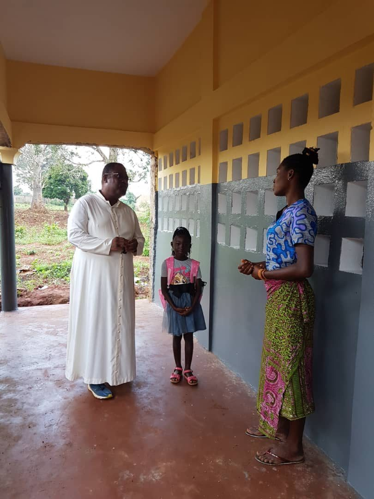
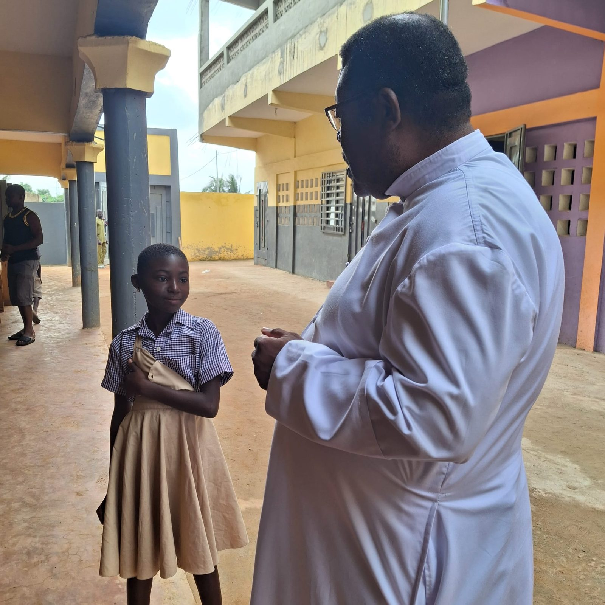
Il y a trois ans, une maman amenait sa fille au portail d'une école toute neuve d'Adzoguidikopé. Un cartable rose, un peu d'appréhension, beaucoup d'espoir. Bernice devenait la toute première élève inscrite du Complexe Scolaire Cheikh Anta Diop.
Aujourd'hui, Bernice porte l'uniforme de l'école et avance, année après année, vers son propre futur. Elle est le visage de ce que cette école promet à chaque enfant de la localité : un chemin qui commence ici.
Des classes pleines, des uniformes bleu vichy, des ardoises fièrement brandies : la vie quotidienne d'une école née d'une promesse.
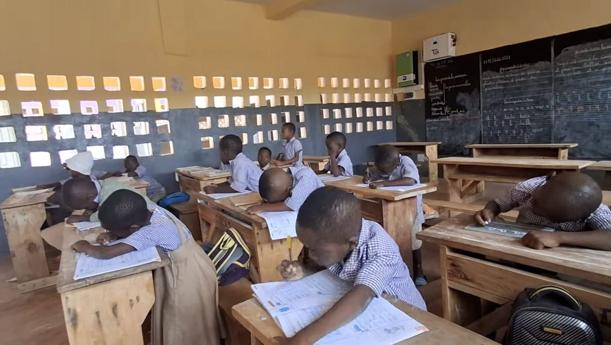
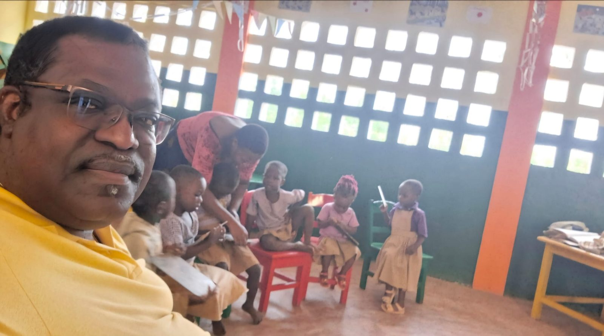
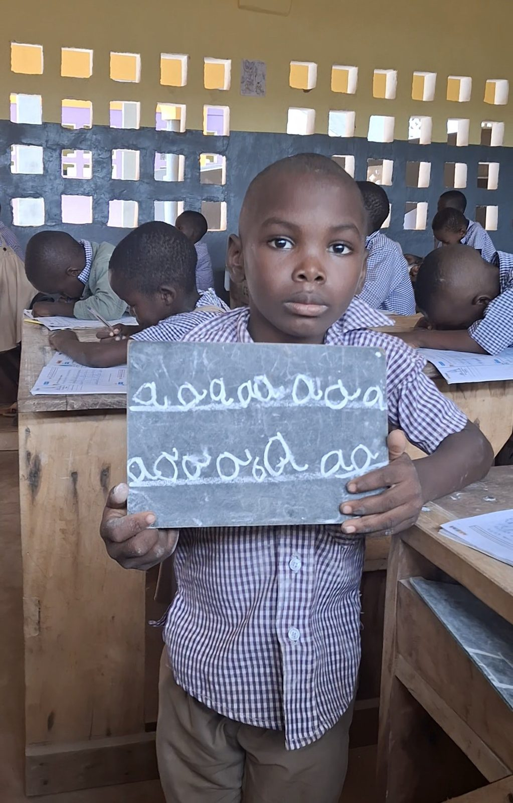
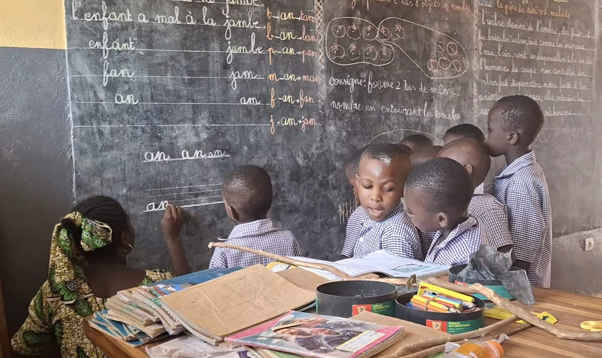
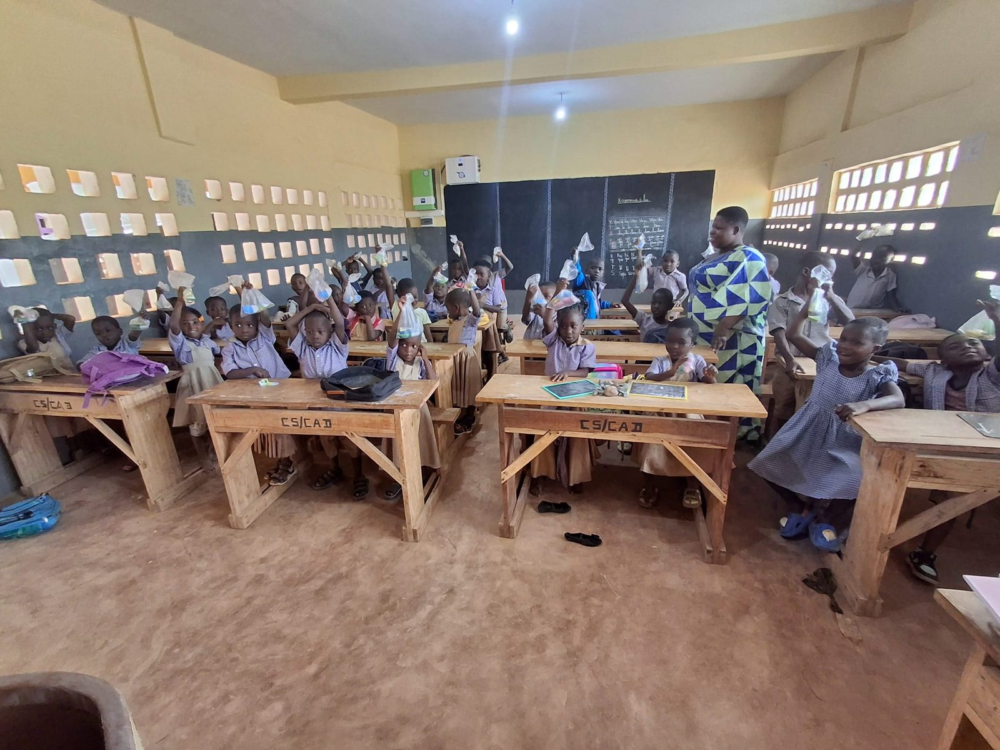
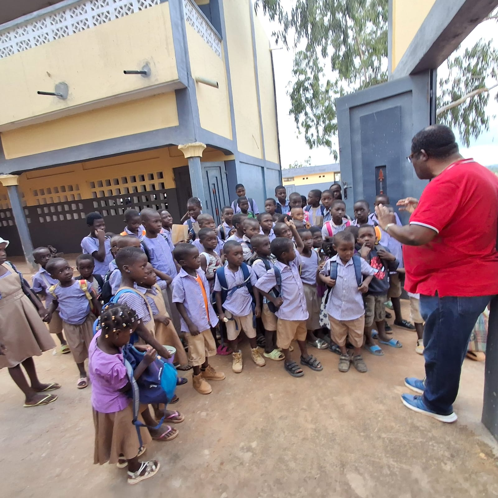
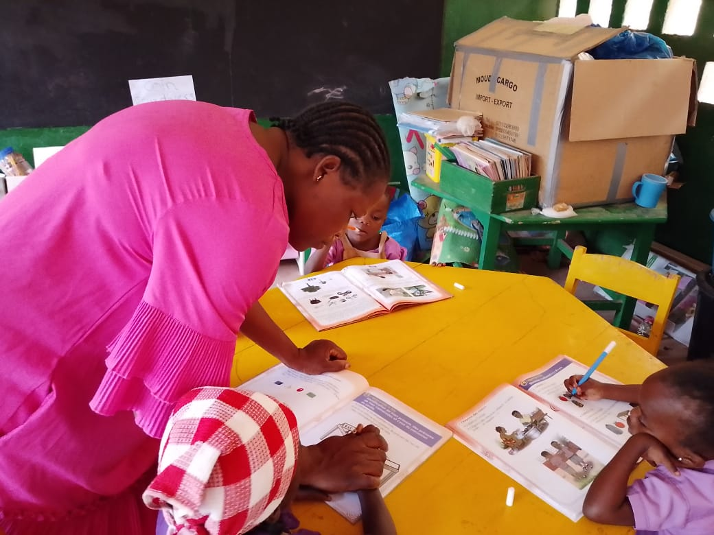
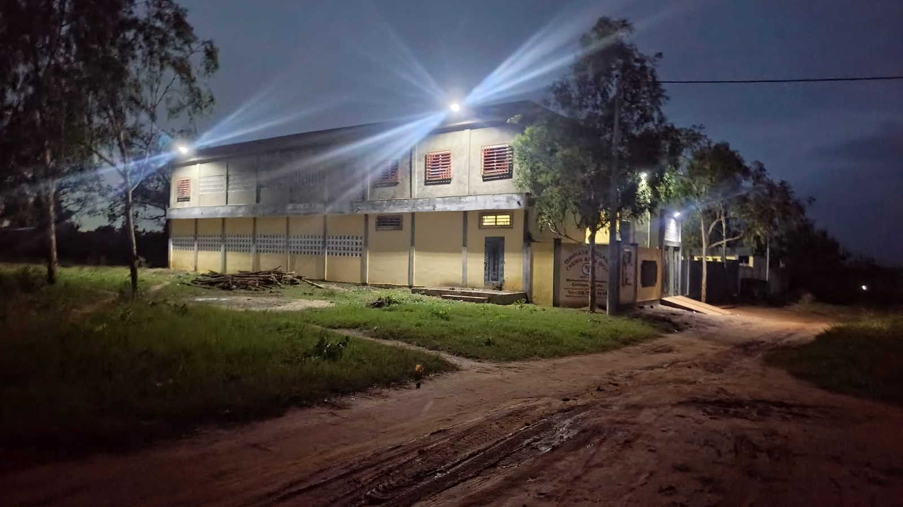
Derrière chaque classe, un enseignant qui a choisi de faire vivre la promesse du fondateur. L'équipe du Complexe Scolaire Bilingue Cheikh Anta Diop accompagne 129 élèves, de la maternelle au lycée, avec exigence et bienveillance.
Réunis pour la toute première fois autour du fondateur, sur les bancs de bois de l'école, ils forment aujourd'hui le cœur vivant de l'établissement.
« Que Dieu bénisse tous les professeurs et les apprenants qui l'habiteront au fil du temps. » — Père Patrice Datévi B. Koffi
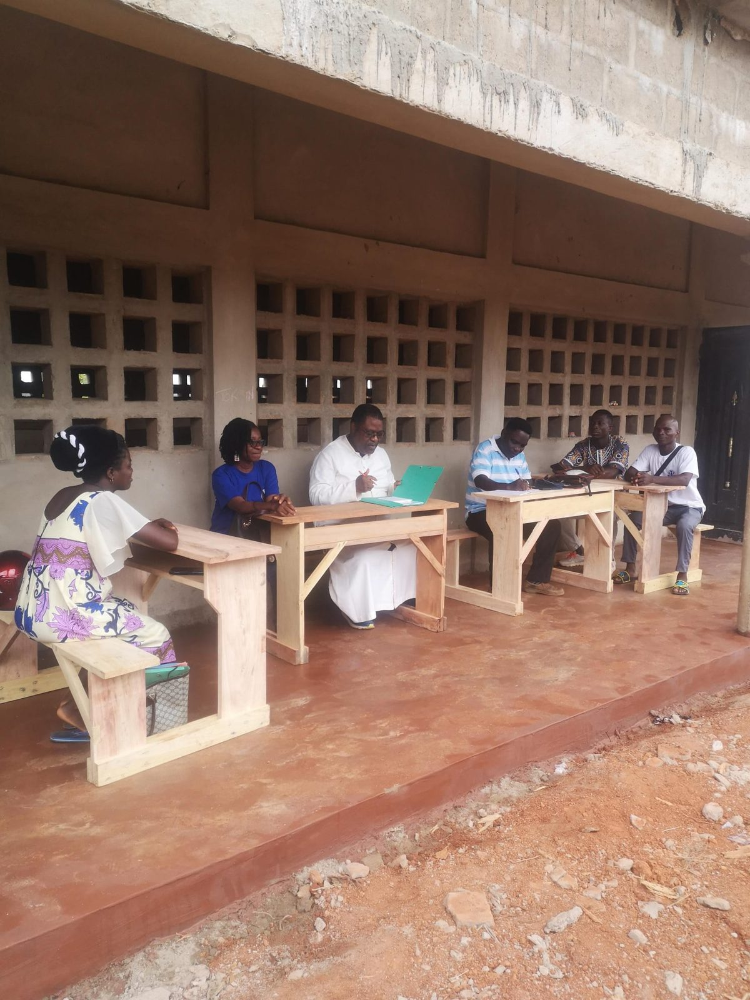
L'école s'est construite pierre par pierre, vacances après vacances. Elle grandit aujourd'hui élève après élève. Chaque soutien compte : matériel scolaire, mobilier, bourses d'élèves, extension des bâtiments.
Les modalités de don en ligne (virement, Mobile Money) seront précisées ici prochainement.
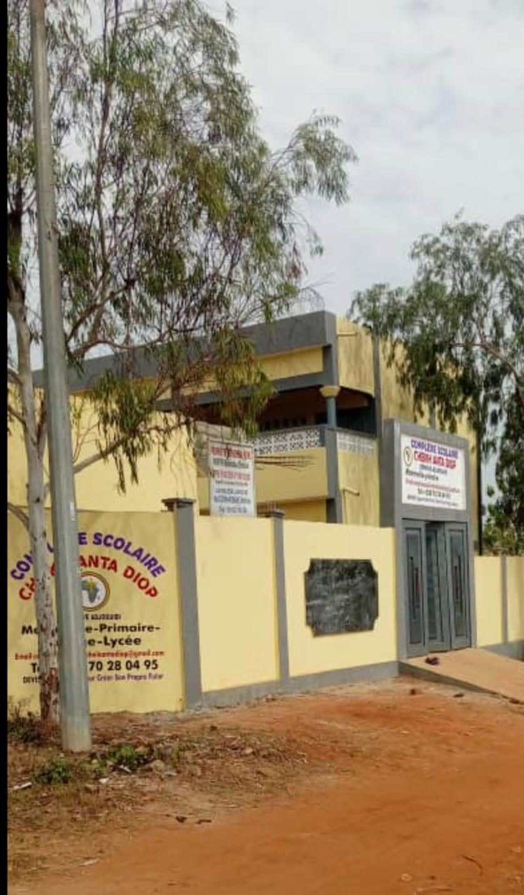